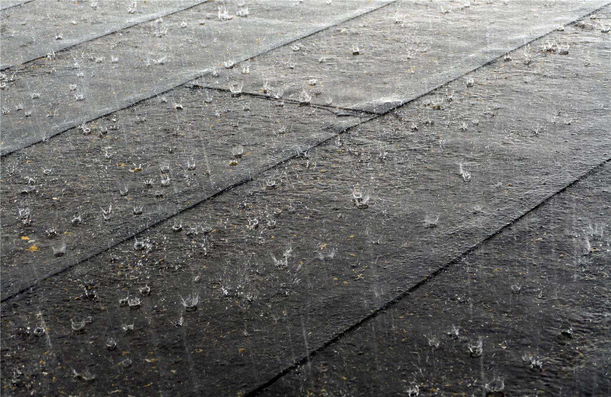

橋한국
한국이재명 정부 2년차, 728조 예산 'AI 대전환'에 건다
정부가 2026년을 'AI 대전환 원년'으로 선포하고 728조 원 슈퍼 확장 재정을 편성했다. AI 3대 강국 도약이 목표지만, 고환율·재정건전성 논쟁이 동시에 불붙는다.
정부가 2026년을 'AI 대전환 원년'으로 선포하고 728조 원 슈퍼 확장 재정을 편성했다. AI 3대 강국 도약이 목표지만, 고환율·재정건전성 논쟁이 동시에 불붙는다.

대통령 선거 정확히 1년 만에 치러진 전국 단위 선거. 지역 권력 지형과 국정 동력에 영향.

올해 1월 한중 정상회담으로 양국 관계가 9년 만에 정상 궤도에 올랐다. 경제·외교안보 대화 채널이 복원되고, 인적·문화 교류가 확대된다.

한성숙 국무총리 후보자가 다주택 보유와 개인정보 유출 논란에 대해 사과하면서, 총리가 되면 과감한 ‘AI 대전환’을 추진하겠다고 밝혔다.

이재명 대통령과 문재인 전 대통령이 다음 달 1일 청와대에서 오찬을 함께한다. 이 대통령 취임 후 첫 만남이다.

이재명 대통령이 이재용 삼성전자 회장을 불러 반도체 투자 방안을 논의했다.

여권 내부 역학이 분주해지는 가운데, 장동혁 측이 친한계·비당권파를 겨냥한 ‘반격 카드’를 검토하는 것으로 전해졌다.

반도체주의 변동성이 커지면서 개인 투자자들의 혼란이 커졌다. ‘분명 샀는데 마이너스’라는 토로가 이어졌다.

원화 약세가 이어지며 환율과 수입 물가에 대한 경계가 커지고 있다.

정부가 CT·MRI 등 영상검사의 건강보험 수가를 낮추기로 하면서 의료비와 진료 환경에 미칠 영향이 주목된다.

호남 지역 반도체 산업 입지를 둘러싸고 지역 간 갈등과 균형 발전 논쟁이 점화됐다.

홍명보 감독이 손흥민을 선발에서 제외하는 결정을 내렸다. 멕시코전 이후 한국의 32강 진출은 다른 경기 결과에 좌우되는 상황이 됐다.

환율과 에너지 가격 영향으로 장바구니 물가가 들썩이며 생활비 부담이 커지고 있다.

중국 외교부, EU와의 경제·통상 관계는 상호이익이라며 보호무역 자제 촉구.

왕이 외교부장, 글로벌 거버넌스 개혁 방향 제시. 중국, 7월 세계 AI 회의 개최 예정.

상무부 집계, 서비스 교역 확대 지속. 디지털·관광·운송이 견인.

수출 증가폭이 둔화되며 흑자가 축소됐다. 대외 수요 약화 신호로 읽힌다.

시진핑 중국 국가주석이 산둥성 더저우의 농촌을 찾아 밀 수확과 식량 안정 공급을 살피며 농업·농촌 현대화의 중요성을 강조했다.

지방정부 차원의 인공지능 협력이 한·중 양국의 호혜적 발전을 이끌 수 있다는 평론이 주목받았다.

중국 자동차의 세계 시장 진출이 ‘국내에서 안 팔려서’가 아니라는 취지의 사평이 실렸다.

중국 하이난 자유무역항이 인공지능 시대에 맞춘 새로운 발전 전략을 모색하고 있다.

중국 난징의 도심 정원에 한여름 연꽃이 활짝 피어 시민들의 발길을 끌고 있다.

홍콩이 혁신의 기회를 선점해 발전을 가속하는 방안을 모색하고 있다는 평론이 주목받았다.

중국이 잇단 풍년의 배경으로 ‘경지 보호 레드라인’ 등 식량 안보 정책을 강조하고 있다.

‘중국 기회 2.0’이라는 틀로 중국식 현대화의 세계적 의미를 짚는 사평이 실렸다.

중국의 한 평론이 외국 기업에 대한 무리한 압박을 멈추고 공정한 대우를 해야 한다고 강조했다.

여름 휴가철을 맞아 중국 각지의 문화·관광과 야간 경제가 활기를 띠고 있다.

취임 2년을 맞은 라이칭더 총통이 평화·안정과 민생을 국정 기조로 제시했다. 대만은 인재 유치 제도를 본격 시행 중이다.

해외 화인 청년의 취업·정착 문이 넓어졌다. 졸업생은 허가 없이 2년 근무, 전문인력은 1년 거주 후 영주 신청.

제7호 태풍 ‘미끄라’의 외곽 순환과 강해진 서남기류가 겹치며 남부 대만에 기록적 폭우가 쏟아졌다. 가오슝·타이난·핑둥은 26일 전 지역 휴업·휴교에 들어갔다.

대만 행정원이 관련 법규의 처벌 수위를 높이는 개정안을 통과시켰다.

대만 행정원이 가정의 세 부담을 덜어주는 방안을 추진한다.

미국 의원들이 대만 지지 입장을 표명하고, 국방예산안의 대만 관련 조항도 논의되고 있다.

대만의 경관 철도 지지선(集集線)이 4년 만에 전 구간 운행을 재개해 관광 활성화 기대가 커진다.

대만 애플 공식 온라인몰이 예고 없이 가격을 올려 아이패드와 맥 제품이 더 비싸졌다.

미국의 5월 PCE 물가 발표에 대만 증시가 출렁였고, 대만지수 야간선물은 하락에서 상승으로 반전했다.

대만의 파인애플 석가(아테모야) 수출을 둘러싼 논쟁에서 라이칭더 총통이 미국이 최대 시장이라고 언급했다.

대만에서 다퉁 의료 관련 입찰의 자격 정지 처분을 둘러싸고 논란이 일고 있다.

남부에 이어 대만 북부도 거센 비에 대비하고 있다. 기상서는 다음 날 북부 강우가 더 거셀 수 있다고 예보했다.

백악관이 국가정보국장 대행을 새로 지명하고, 법무부는 일부 정책 방향을 정리했다. 대외·통상 변수도 화인 경제에 파급.

EU 지도자들이 우크라이나 지원, 2028~2034 예산, 방위·이민을 의제로 올렸다. 올해 회원국 8곳이 총선을 치른다.

7일간 본토·카나리아 제도 순방.

그레이트니코바르 섬 항만·공항·신도시 계획.

베네수엘라에서 규모 7대의 강진이 잇따라 발생해 수도 카라카스 일대 건물이 붕괴하고 전력·통신이 끊겼다. 카리브해 일대에는 쓰나미 경보가 내려졌고, 초기 인명피해 추정 폭이 매우 넓어 구조 당국이 비상에 들어갔다.

오만 인근 해역에서 화물선이 공격받아 국제 유가가 장중 2% 넘게 반등했다. 미국 측은 이란이 선박에 사격을 가했다고 밝혔다. 합의로 통항이 재개되던 호르무즈 해협에 긴장이 되살아났다.

키어 스타머 영국 총리가 당 안팎의 거센 압박 끝에 총리직과 노동당 대표직에서 물러났다. 후임 선출과 정책 노선을 둘러싸고 영국 정치가 새로운 격랑에 들어섰다.

유럽연합이 이스라엘의 가자지구 70% 통제 방침을 거부하고, 대규모 인도적 지원의 즉각·전면 허용과 국경 통과로 재개를 촉구했다.

영국이 7월 1일부터 철강 수입 관세를 기존의 두 배인 50%로 끌어올린다. 한국 산업부는 영향 최소화를 위한 보상 협의에 나섰다.

이른 폭염이 유럽을 달구며 영국과 스위스가 역대 가장 더운 6월을 기록했고, 네덜란드는 고온경보를 발령했다.

폴란드 중서부에서 열차 두 대가 충돌해 2명이 다쳤다.

트럼프 행정부의 강경 이민단속을 상징하던 습지 이민자 수용시설이 운영 1년 만에 문을 닫았다.

물가가 3년 만에 가장 높은 수준으로 뛰면서, 선거를 앞둔 트럼프 대통령과 공화당의 부담이 커졌다.

미국의 1분기 경제성장률이 잠정치보다 0.5%p 높은 2.1%로 상향 조정됐다.

한밤중 수백만 명에게 ‘외계인이 공격할 것’이라는 황당한 긴급재난경보가 잘못 발송돼 소동이 빚어졌다.

이란 외교부 대변인이 미국의 군사 행동과 개입주의가 중동의 평화를 가로막고 있다고 주장했다.

유럽연합이 기후행동 장관급 회의를 열어 자동차 배출 기준과 물 회복력 전략 등을 논의했다.

세계경제포럼(WEF) 하계 회의가 인공지능을 핵심 의제로 내걸고 기술과 성장의 길을 논의했다.

미국 국무부 고위 당국자가 한국 측에 쿠팡 처우에 대한 불만을 분명히 전달했으며 논의를 이어가겠다고 밝혔다.

졸업생 취업·영주 경로를 나란히. 화인 독자를 위한 실전 해설.

체류자격·기한·서류는 거주지와 자격별로 다르다. 미리 챙기면 불이익을 피할 수 있다.

인천화교협회가 여권 발급과 각종 인증 수수료의 인상을 예고했다. 행정 비용이 오르면 재한 화교 가정의 실생활 부담으로 직결돼, 미리 일정을 챙기라는 당부가 나온다.

부산화교중학(부산화교중고등학교)이 2026학년도(중화민국 115학년도) 신입생과 편입생 모집 공고를 냈다. 1차 접수는 7월 10일까지, 2차는 8월 10~14일이다.

인천화교 중산중학·소학이 개교 125주년을 맞아 교경(校慶) 행사를 열었다. 한 세기를 넘긴 화교 교육의 전통과 3개 언어·민속 교육의 성과가 한자리에 모였다.

한성화교협회가 봄철 교유대회를 열어 화교 동포 650여 명이 한자리에 모였다. 행사장은 온정과 친목의 열기로 가득했다.

인천화교협회가 영주권(F-5)을 가진 외국인의 체류카드(영주증) 10년 주기 갱신을 안내했다. 유효기간이 다가온 동포는 만료 전 갱신 신청을 해야 불이익을 피할 수 있다.

한성화교협회가 국경배 농구 토너먼트 개최를 공고하고 참가 팀을 모집한다.

휴가철을 앞두고 외국인 주민의 체류·재입국 관련 행정을 미리 점검해 두면 불필요한 혼선을 줄일 수 있다.

여름 성수기를 맞아 인천 차이나타운의 상권과 문화 행사가 활기를 띠고 있다.

여름 학기를 앞둔 화인 유학생을 위해 장학·지원 정보를 공식 창구로 정확히 확인하는 것이 중요하다.

여름철 건강관리를 앞두고 다국어 의료·건강 지원 정보를 점검해 두면 도움이 된다.

원·달러 환율이 2009년 이후 최고로 치솟았다. 외국인 자금 이탈이 방아쇠를 당겼고, 본국에 돈을 보내는 화인 가정과 유학생이 가장 먼저 타격을 받는다. 정부는 '즉각 대응'을 예고했다.

달러뿐 아니라 유로 대비 원화도 약세. 유럽발 수입품과 여행 비용이 오른다.

대규모 자금 유출이 환율과 주가를 함께 끌어내렸다.

6월 11일 멕시코시티 개막, 7월 19일까지. 폭염 대비 규정 신설.

안전성·내약성 확인. 문어의 거울 사용도 관찰.

무척추동물의 거울 이용이 관찰돼 인지과학에 새로운 질문을 던졌다.

미국의 5월 개인소비지출(PCE) 물가가 1년 전보다 4.1% 올라 3년 만에 가장 높은 수준을 기록했다. 휘발유값 급등이 끌어올렸고, 연준의 금리 셈법이 한층 복잡해졌다.

애플이 일부 제품 가격을 올렸지만 주가는 6%대 급락했다. 기술주 흐름이 엇갈렸다.

NBA 미네소타 팀버울브스가 선수 맞교환 트레이드를 단행했다.

노르웨이 대표팀의 ‘바이킹 노 젓기’ 세리머니가 월드컵 밈으로 폭발했다. 홀란·외데고르가 중심에 섰다.

한국 프로야구에서 한 유망 투수의 제구 난조가 도마에 오르며 ‘성장통’이 주목받았다.

한국 예능 프로그램에서 출연자들의 솔직한 토크가 시청자 공감을 이끌었다.

1884년 인천화상조계 이래 140년. 인구는 8만에서 1만으로 줄었지만, 역사·문화 자산과 관광 가치는 오히려 커지고 있다.

첨단 신도시와 근현대 개항장의 공존. 해외 매체도 주목.

이중 언어·문화 강점. 무역·통번역·교육으로.

고위공직자 재산공개에서 김문희 평가원장이 98억 원, 최지영 전 재경부 차관보가 285억 원을 신고했다. 공직 투명성을 둘러싼 관심이 다시 커졌다.

정부가 보완수사권 폐지 방향으로 정리했다는 입장이 나오면서 수사구조 재편 논의가 이어진다.

개표소 봉쇄 시위에 참가한 인물이 처음으로 구속됐다.

대형 유통 플랫폼의 노동 처우 문제가 다시 도마에 올랐다. 한·미 통상 현안과도 맞물린다.

이른 더위가 시작되며 온열질환과 취약계층 보호에 대한 대비가 강조된다.

본격적인 장마와 집중호우를 앞두고 저지대와 하천변의 선제적 안전 점검이 강조된다.